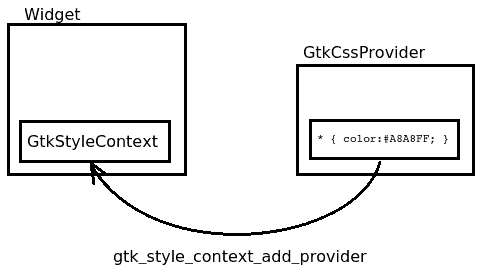

Change background and text color (with CSS)
This method will show you how you
use CSS to change background color and text color of a widget.
Structure

simplemenu.c
void changeBackground (GtkWidget *widget)
{
GtkStyleContext * context = gtk_widget_get_style_context(widget);
GtkCssProvider * css = gtk_css_provider_new();
gtk_css_provider_load_from_data(css, "* { color: #A8A8FF;"
"background: #DD0808;}",53,NULL);
gtk_style_context_add_provider(context, GTK_STYLE_CONTEXT(css), GTK_STYLE_PROVIDER_PRIORITY_USER);
}
- Setting background color:
Be aware of the fact, that (with high probability) the current windowing theme might
place a background-image on the button. This will then cover your background-color.
Therefore, use background: red; to set the color or
background-image: none; background-color:red;.